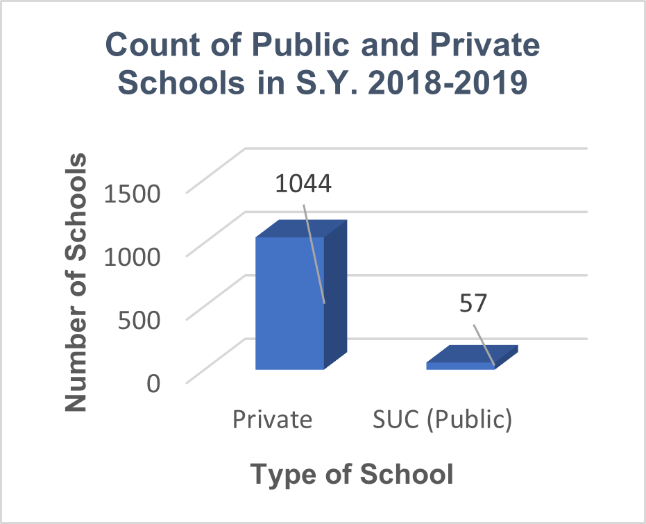
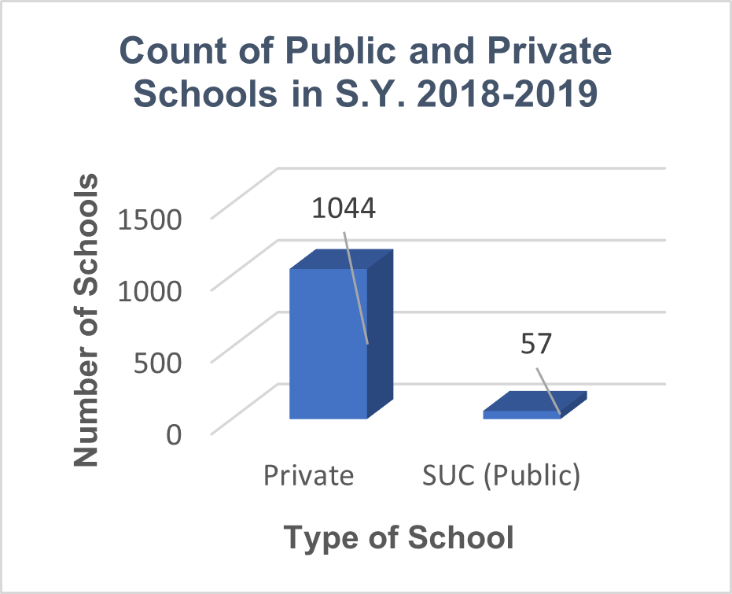
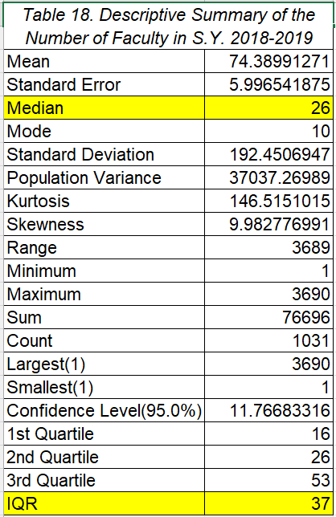
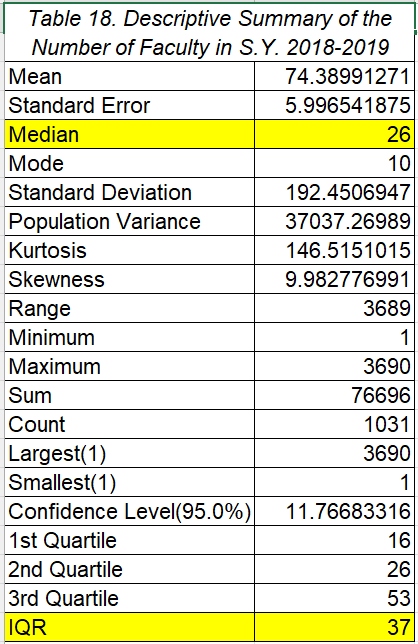
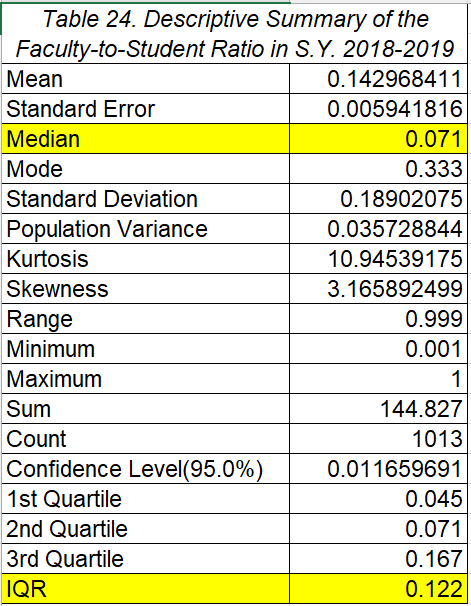
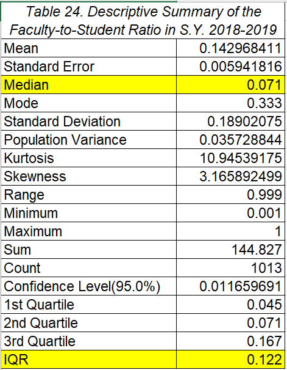

PARAMETERS
VARIABLE 1: REGION
Bar Graphs and Pie Charts


VARIABLE 2: TYPE OF SCHOOL (PUBLIC OR PRIVATE)
Bar Graphs and Pie Charts

 



VARIABLE 3: NUMBER OF STUDENTS
Histogram


Descriptive Summaries and Box and Whisker Plots


VARIABLE 4: NUMBER OF FACULTY
Histogram

Descriptive Summaries and Box and Whisker Plots
 



VARIABLE 5: RATIO OF FACULTY TO STUDENTS
Histogram
Descriptive Summaries and Box and Whisker Plots
 



CONCLUSION
Compared to other parts of Luzon, the National Capital Region has the highest education institutions, likely as a result of its substantial population, advanced infrastructure, and extensive intellectual resources. The Cordillera Administrative Region, on the other side, has the fewest colleges. Furthermore, private universities make up over 95% of all higher education institutions in Luzon. In general, higher education in Luzon is in good standing and is progressing positively in terms of the faculty-to-student ratio. The majority of all the schools in Luzon by S.Y. 2018-2019 already have a satisfactory faculty-to-student ratio, which often indicates more individual attention on each student, further promoting their growth and development. However, colleges in Luzon have faced a decline in the aspects of student and faculty body for the past three school years. These declines really show poor development because naturally we should expect more students at schools due to our increasing population. Furthermore, if we want to cope with our ideal growing student population, then more people should be given job opportunities and be employed to cater to the rising demands of students.
Considering that CHED (Commission on Higher Education) collects their data through their “Annual Higher Education Data/Information Collection” survey, some schools were unable to give their complete data regarding their student and faculty population. For instance, in the S.Y. 2017-2018, out of 1098 of S.Y. 2017-2018 colleges, only 624 colleges were able to provide a complete data of their student population. Moreover, only 1076 colleges were able to provide complete data of their faculty population, and only 1046 colleges were able to provide complete data of their faculty/student ratio. Although the effect of these nonresponse biases to our data sets are mild to none, we cannot counter the fact that these missing links may serve to benefit the parameters we are examining.
As long as our nation continue to develop and advance its assets, our education system, especially in higher levels, should always be given great consideration and attention for our schools are the place where our students learn how to further develop their skills, become individuals they aspire to be, and become citizens of our country who selflessly devote one’s capabilities in service to our nation. Constant and consistent monitoring of the current state and condition of our country’s current metropolitan center, which is Luzon, can greatly aid our government in making informed decisions that would hopefully improve our education system. With these parameters, it can also serve as a basis or prompts for future research—finding out more plausible causes for the decrease of the number of students and faculty within these three school years. Furthermore, there are many factors other than location and class size to consider when we examine higher education. Influences such as economic, cultural, and social factors and teaching methods are highly encouraged to be studied in future research.
Higher Education in Luzon in S.Y. 2016-2017, S.Y. 2017-2018, and S.Y. 2018-2019 by Jade Dalupe. All Rights Reserved. 2023